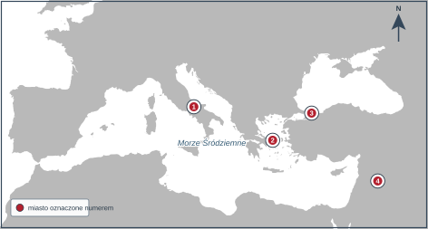

KOD UCZNIA:
Materiał autorski do ćwiczeń, opracowany na podstawie regulaminu i archiwalnych arkuszy Kujawsko-Pomorskiego Kuratora Oświaty. Nie jest oficjalnym arkuszem konkursowym.
Dopasuj każdą informację do właściwej cywilizacji. Wpisz literę A–E. Każdej litery użyj dwa razy.
| Nr | Informacja | Litera |
|---|---|---|
| 1 | Powstał tu Kodeks Hammurabiego. | |
| 2 | Rozwój państwa zależał od regularnych wylewów Nilu. | |
| 3 | Religia tej społeczności miała charakter monoteistyczny, a jej ważnym tekstem była Tora. | |
| 4 | W Atenach ukształtowała się demokracja bezpośrednia. | |
| 5 | Prawo spisano m.in. na Dwunastu Tablicach. | |
| 6 | Stosowano pismo klinowe utrwalane na glinianych tabliczkach. | |
| 7 | Władca nosił tytuł faraona, a do pisania używano papirusu. | |
| 8 | Według tradycji Mojżesz otrzymał Dekalog. | |
| 9 | Polis organizowały igrzyska ku czci Zeusa. | |
| 10 | Językiem administracji i prawa była łacina. |
Rozpoznaj miasta oznaczone numerami 1–4. Wpisz ich nazwy.

Mapa bazowa: TheDastanMR, Wikimedia Commons, CC0 1.0; oznaczenia i opracowanie zadania: własne.
| 1. Stolica imperium nad Tybrem: | |
| 2. Polis kojarzona z demokracją: | |
| 3. Stolica cesarstwa wschodniorzymskiego od IV w.: | |
| 4. Miasto święte judaizmu, chrześcijaństwa i islamu: |
Uzupełnij brakujące imiona.
| Dziedzina | Grecja | Rzym |
|---|---|---|
| najwyższy bóg, władca nieba | Zeus | |
| morze | Neptun | |
| mądrość i roztropna wojna | Atena |
Dopasuj instytucję lub urząd do opisu. Wpisz litery A–E. Jedna odpowiedź jest zbędna.
| 1. Dwaj najwyżsi urzędnicy wybierani na rok, dowodzący armią. | |
| 2. Rada złożona głównie z byłych urzędników, mająca wielki wpływ na politykę. | |
| 3. Urzędnik broniący interesów plebejuszy, dysponujący prawem sprzeciwu. | |
| 4. Zebranie obywateli uchwalające prawa i wybierające urzędników. |
Dopasuj datę do wydarzenia. Użyj każdej daty raz.
Daty: 622 • 1054 • 476 • 966 • 800
| 1. Upadek cesarstwa zachodniorzymskiego | |
| 2. Hidżra Mahometa z Mekki do Medyny | |
| 3. Koronacja cesarska Karola Wielkiego | |
| 4. Chrzest Mieszka I | |
| 5. Wielka schizma wschodnia |
Dopisz właściwe pojęcia do opisów.
| 1. Ziemia lub inne dobro nadane za służbę i wierność. | |
| 2. Osoba otrzymująca dobro w zamian za zobowiązanie do służby. | |
| 3. Feudał nadający dobro i przyjmujący hołd. | |
| 4. Przymusowa praca chłopa na ziemi pana. | |
| 5. Organizacja zrzeszająca rzemieślników jednej specjalności. | |
| 6. System uprawy polegający na podziale pola na trzy części. |
Rozpoznaj style przedstawione na schematycznych rysunkach, a następnie podaj jedną cechę stylu B widoczną na ilustracji.
1. Styl A: 2. Styl B:
3. Cecha stylu B:
Rysunki: opracowanie własne na podstawie cech architektury romańskiej i gotyckiej.
Dopasuj podróżnika do osiągnięcia. Wpisz litery A–F. Jedna postać jest zbędna.
| 1. W 1488 r. dotarł do południowego krańca Afryki. | |
| 2. W 1492 r. dopłynął do wysp Ameryki, sądząc, że osiągnął Azję. | |
| 3. W 1498 r. dotarł drogą morską do Indii. | |
| 4. Jego wyprawa jako pierwsza opłynęła Ziemię. | |
| 5. Upowszechnił pogląd, że odkryte lądy są odrębnym kontynentem. |
Oceń prawdziwość zdań. Wpisz P albo F.
| 1. Humanizm kierował uwagę ku człowiekowi i dziedzictwu antyku. | |
| 2. Jan Gutenberg skonstruował prasę drukarską pod koniec XVI w. | |
| 3. Wystąpienie Marcina Lutra w 1517 r. uznaje się za początek reformacji. | |
| 4. Sobór trydencki zapoczątkował reformację luterańską. | |
| 5. Ignacy Loyola był założycielem zakonu jezuitów. | |
| 6. Konfederacja warszawska z 1573 r. służyła utrzymaniu pokoju religijnego. |
Dopasuj władcę do wydarzenia. Wpisz litery A–G. Jedna postać jest zbędna.
| 1. Przyjęcie chrztu w 966 r. | |
| 2. Pierwsza koronacja królewska w 1025 r. | |
| 3. Odbudowa państwa i przeniesienie głównego ośrodka władzy do Krakowa. | |
| 4. Konflikt z biskupem Stanisławem zakończony wygnaniem władcy. | |
| 5. Ustawa sukcesyjna, której skutkiem było rozbicie dzielnicowe. | |
| 6. Koronacja w Krakowie w 1320 r. |
Opis źródła: opracowanie własne na podstawie wiadomości o ustawie sukcesyjnej.
1. Podaj imię i przydomek autora ustawy.
2. Podaj rok wejścia ustawy w życie.
3. Jak nazywano zasadę, według której najstarszy Piast zostawał seniorem?
4. Jak nazywano zasadę zwierzchniej władzy seniora nad pozostałymi książętami?
5. Podaj najważniejszy długofalowy skutek ustawy.
Dopasuj władcę do wydarzenia. Wpisz litery A–F.
| 1. Założenie Akademii Krakowskiej | |
| 2. Zwycięstwo pod Grunwaldem | |
| 3. Zakończenie wojny trzynastoletniej II pokojem toruńskim | |
| 4. Przyjęcie hołdu pruskiego | |
| 5. Zawarcie unii lubelskiej | |
| 6. Utworzenie piechoty wybranieckiej |
Przeanalizuj uproszczony fragment drzewa genealogicznego i odpowiedz na pytania.
Opracowanie własne; drzewo celowo pomija część potomstwa.
1. Kim Kazimierz IV był dla Zygmunta II Augusta?
2. Kim Anna Jagiellonka była dla Zygmunta II Augusta?
3. Wymień trzech synów Kazimierza IV pokazanych na schemacie, którzy zostali królami Polski.
4. Kto był mężem Anny Jagiellonki?
Oceń prawdziwość zdań. Wpisz P albo F.
| 1. Unia lubelska z 1569 r. była unią realną. | |
| 2. Korona i Litwa zachowały m.in. odrębne urzędy, skarb i wojsko. | |
| 3. Artykuły henrykowskie ustalano od nowa osobno dla każdego elekta. | |
| 4. Pacta conventa zawierały osobiste zobowiązania danego kandydata do tronu. | |
| 5. Liberum veto pozwalało jednemu posłowi zerwać sejm i unieważnić jego uchwały. | |
| 6. W wolnej elekcji prawo głosu mieli wyłącznie magnaci. |
Do każdej wojny dopasuj jedną bitwę (A–E) i jeden skutek lub układ (1–5). Jedna bitwa i jeden skutek są zbędne.
| Konflikt | Bitwa – litera | Skutek – numer |
|---|---|---|
| wojny ze Szwecją | ||
| wojny z państwem moskiewskim | ||
| powstanie Chmielnickiego | ||
| wojny z Imperium Osmańskim |
Dopasuj pojęcie, postać lub dokument do opisu. Wpisz litery A–F.
| 1. Autor koncepcji trójpodziału władzy. | |
| 2. Myśliciel kojarzony z ideą umowy społecznej i suwerenności ludu. | |
| 3. Dowódca armii kolonistów, następnie pierwszy prezydent USA. | |
| 4. Dokument ogłoszony 4 lipca 1776 r. | |
| 5. Twierdza-więzienie zdobyta 14 lipca 1789 r. | |
| 6. Ustrój ogłoszony we Francji po obaleniu monarchii w 1792 r. |
Ustawa Rządowa, rozdział V (pisownia uwspółcześniona; skróty zaznaczono).
1. Podaj zwyczajową nazwę dokumentu (1 p.) i pełną datę jego uchwalenia (1 p.).
2. Jaką oświeceniową zasadę dotyczącą źródła władzy wyraża pierwsze zdanie? (1 p.)
3. Przyporządkuj instytucje do rodzaju władzy: sejm, król i Straż Praw, sądy. (3 p.)
4. Wymień dwa mechanizmy ustrojowe zniesione przez ten dokument. (2 p.)
Dopasuj pojęcie do opisu. Wpisz litery A–E.
| 1. Związek przeciwników Konstytucji 3 maja wsparty przez Katarzynę II. | |
| 2. Order wojskowy ustanowiony przez Stanisława Augusta po bitwie pod Zieleńcami. | |
| 3. Akt Tadeusza Kościuszki ograniczający powinności chłopów i zapewniający im opiekę państwa. | |
| 4. Chłopscy żołnierze uzbrojeni w przekute kosy. | |
| 5. Podział ziem Rzeczypospolitej w 1795 r., po którym państwo przestało istnieć. |
Jeżeli test jest przeprowadzany w warunkach konkursowych, odpowiedzi można przenieść na tę kartę.
| Zadanie | Odpowiedzi |
|---|---|
| I | 1.__ 2.__ 3.__ 4.__ 5.__ 6.__ 7.__ 8.__ 9.__ 10.__ |
| II | 1.________ 2.________ 3.________ 4.________ |
| III | 1.________ 2.________ 3.________ |
| IV | 1.__ 2.__ 3.__ 4.__ |
| V | 1._____ 2._____ 3._____ 4._____ 5._____ |
| VI | 1.________ 2.________ 3.________ 4.________ 5.________ 6.________ |
| VII | 1.________ 2.________ 3.________________________________ |
| VIII | 1.__ 2.__ 3.__ 4.__ 5.__ |
| IX | 1.__ 2.__ 3.__ 4.__ 5.__ 6.__ |
| X | 1.__ 2.__ 3.__ 4.__ 5.__ 6.__ |
| XI | 1.____________ 2._____ 3.____________ 4.____________ 5.____________________ |
| XII | 1.__ 2.__ 3.__ 4.__ 5.__ 6.__ |
| XIII | 1.____________ 2.____________ 3.________________________________ 4.____________ |
| XIV | 1.__ 2.__ 3.__ 4.__ 5.__ 6.__ |
| XV | Szwecja: __/__ Moskwa: __/__ Chmielnicki: __/__ Turcja: __/__ |
| XVI | 1.__ 2.__ 3.__ 4.__ 5.__ 6.__ |
| XVII | |
| XVIII | 1.__ 2.__ 3.__ 4.__ 5.__ |
Wynik: / 100 p.